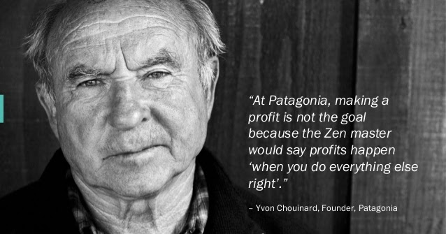
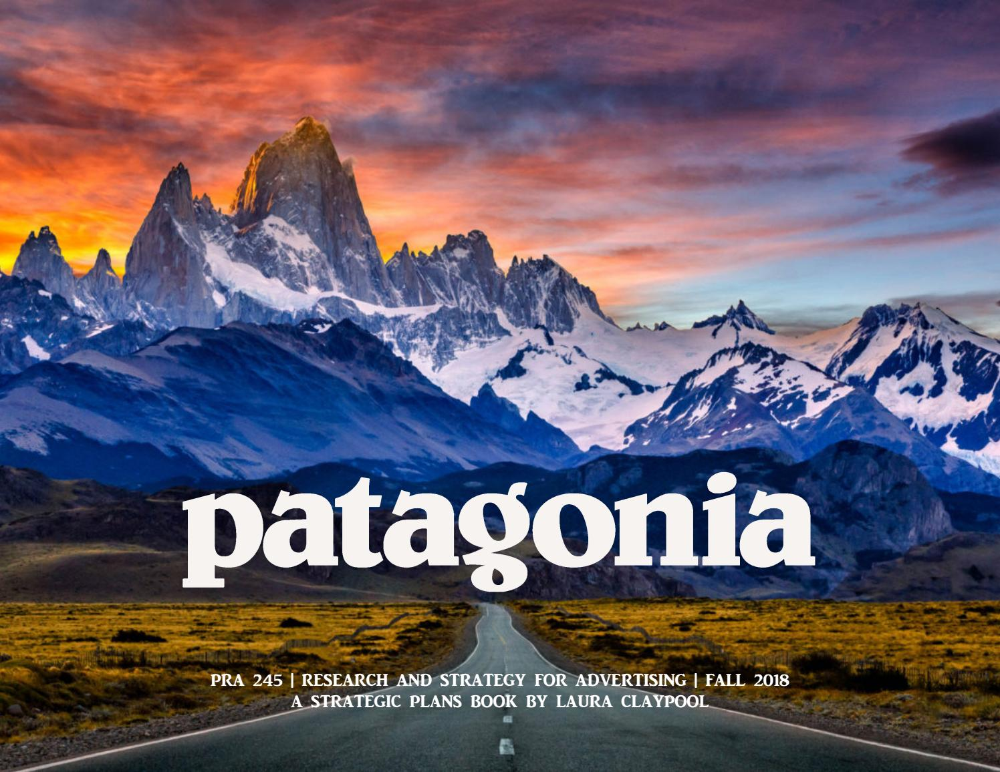

Yvon Chouinard, an accomplished rock climber, began selling hand forged mountain climbing gear in 1957 through his company Chouinard Equipment. He worked alone selling his gear until 1965 when he partnered with Tom Frost in order to improve his products and address the growing supply and demand issue he faced.
In 1970, Chouinard obtained rugby shirts from Scotland that he wore while climbing because the collar kept the climbing sling from hurting his neck.
Great Pacific Iron Works, Patagonia's first store, opened in 1973 in the former Hobson meat-packing plant at Santa Clara St, in Ventura, near Chouinard's blacksmith shop. In 1981, Patagonia and Chouinard Equipment were incorporated within Great Pacific Iron Works. In 1984, Chouinard changed the name of Great Pacific Iron Works to Lost Arrow Corporation.
